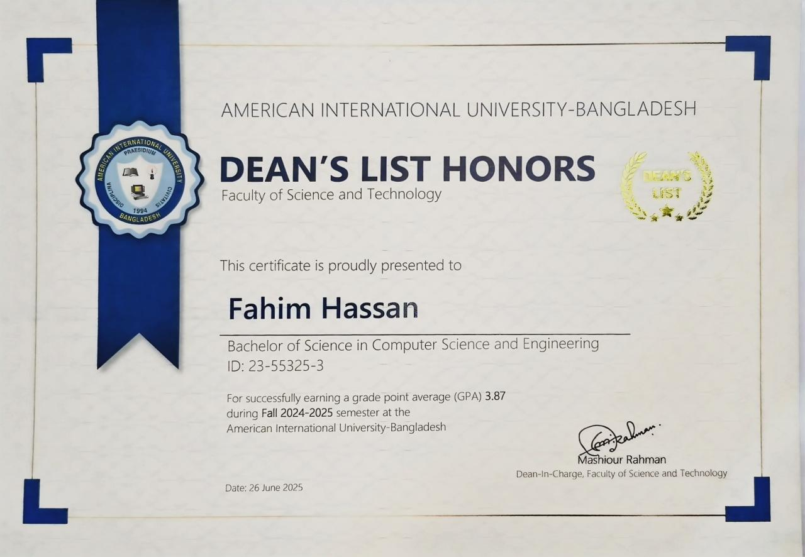
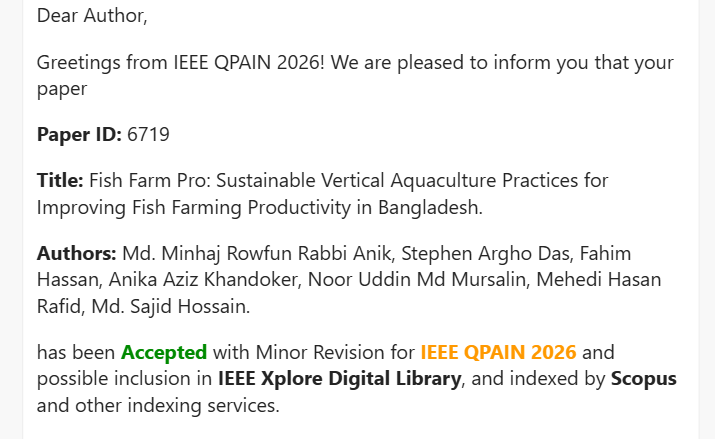

I received the Dean's List Honors from American International University-Bangladesh for achieving a GPA of 3.87 in the Fall 2024-2025 semester in the Bachelor of Science in Computer Science and Engineering program. This recognition reflects my strong academic performance and dedication to maintaining high academic standards.

I co-authored a research paper titled “Fish Farm Pro: Sustainable Vertical Aquaculture Practices for Improving Fish Farming Productivity in Bangladesh.” The paper was accepted with minor revisions at the IEEE conference IEEE QPAIN 2026. This research focuses on improving fish farming productivity in Bangladesh using sustainable vertical aquaculture practices. The work may also be included in the IEEE Xplore Digital Library and indexed by Scopus, which highlights the academic contribution of our research.